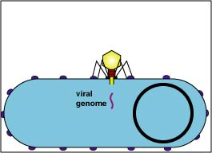
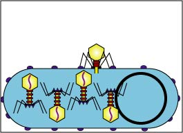
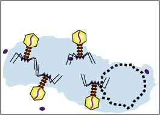

მიმაგრება

მიმაგრების ეტაპი დამოკიდებულია მასპინძელი ბაქტერიის ზედაპირზე არსებულ რეცეპტორებზე. ეს რეცეპტორები განსაზღვრავენ, თუ რომელ ფაგს შეიკავშირებს ბაქტერია. რეცეპტორთან შეკავშირების შემდეგ ფაგი ბაქტერიულ უჯრედში აღწევს დიფუზიის გზით.
დაინფიცირება
ამ ეტაპზე ფაგი საკუთარ გენეტიკურ მასალას (დნმ-ს ან რნმ-ს) გადასცემს მასპინძელ ბაქტერიულ უჯრედს. რის გამოც ბაქტერიის გენეტიკური ინფორმაცია ფაგის გენეტიკური ინფორმაციით იცვლება.
გამრავლება

გენეტიკური მასალის გადაცემის შემდეგ ბაქტერიის შიგნით იწყება მრავალი ახალი ფაგის სინთეზი , სანამ მათი რიცხვი გარკვეულ კრიტიკულ ზღვარს არ მიაღწევს .
გამოთავისუფლება

კრიტიკული ზღვარის მიღწევის შემდეგ ფაგები ტოვებენ ბაქტერიულ უჯრედს, რის შედეგადაც ბაქტერიული უჯრედი იღუპება . გამოთავისუფლებული ფაგები მიემართებიან სხვა ბაქტერიული უჯრედებისაკენ, რათა ისინიც ამავე გზით დააინფიცირონ .